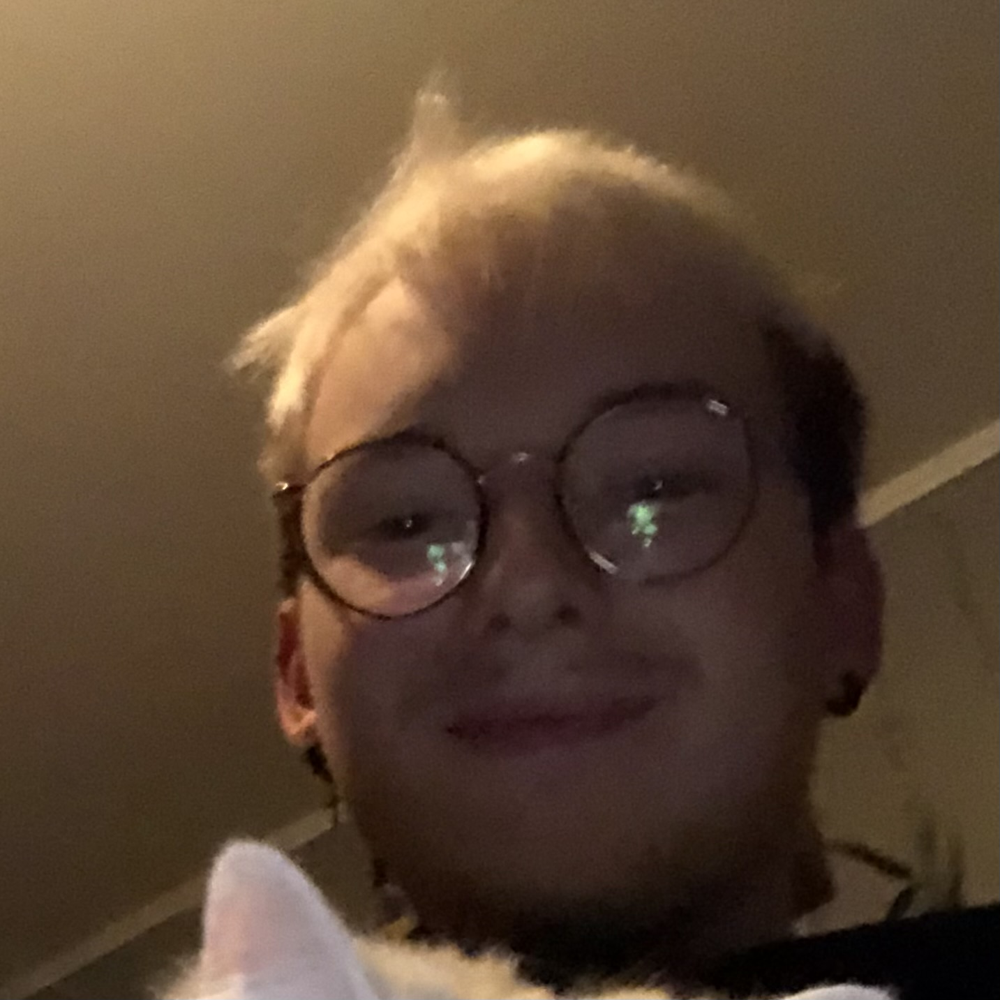

About
Games
Contact

About Me
Hi, I'm Tom Kowalczuk I've been an indie dev currently working on my first real game called Voxel Garden
About Miyuki
Miyuki is my White little ball of floof or more commonly known as my cat